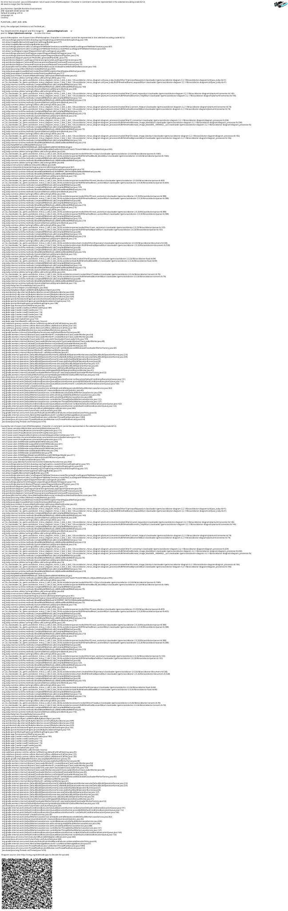

الرسم البياني للمعرفة كمحرك للتوصية: كيف قتلت المقالات « ذات الصلة » الزمنية
Publié le 12 May 2026
- المشهد: الثلاثاء 12 مايو، 17h30
- التشخيص: ثلاثة أنواع من العلاقات التي لا يرىها أي قالب
- الحل: خط أنابيب Gradle، وليس استدعاء LLM على الساخن
- الأ’ontولوجيا الناشئة: عندما تجمع المقالات نفسها دون أن تعرف بعضها
- عقد DAG: من يهم من
- ما نكسبه (وما لا نكسبه)
- المنظور: المدونة كرسم بياني للمعرفة العامة
- الخاتمة : نظام الملفات يعرف ما يتجاهله القالب
- المراجع
أنت تقرأ مقالة حول تكامل pgvector مع LangChain4j. في أسفل الصفحة، JBake يقترح لك « المقالات ذات الصلة ». أنت تضغط. إنه مقال عن… التكوين من Kitty Terminal. ما هو الشيء المشترك الوحيد بينهما؟ تم نشرهما بأقل من خمسة عشر يومًا بفارق. هذا ليس توصية. هذا تقويم متنكر على محرّري.
المشهد: الثلاثاء 12 مايو، 17h30
أعيد قراءة أحد مقالاتي — هذا عن رسم المعرفة كأداة لفهم قاعدة الكود المحتوى كثيف: العقد, الحواف, المجتمعات, PlantUML, التدريب. مقال تقنية قراءة مدتها 15 دقيقة تعبئ`graphify-gradle`, plantuml-gradle, ومفاهيم توبولوجيا الرسم البياني
في أسفل الصفحة، يقترح لي «المقالات ذات الصلة» :
-
مقالة حول نموذج اتصال Firebase (0113)
-
مقالة حول آلية Eager/Lazy (0108)
-
مقال عن هجرة سكريبت Gradle → الإضافة (0102)
-
مقالة حول تراكم اشتراكات Ollama Pro (0120)
ليس لديهم أي علاقة مع Knowledge Graph. هم هنا لأنهم الأحدث نشرًا — جوار زمني، ليس الجوار الدلالي.
أنظر إلى القالب`post.thyme` :
<!-- Articles connexes (liens internes SEO) -->
<th:block th:each="post,postStat : ${published_posts}">
<th:block th:if="${!post.uri.equals(content.uri) and postStat.index lt 4}">
...
</th:block>
</th:block>`published_posts`هي قائمة زمنية.`postStat.index lt 4`يأخذ ال الأربعة الأولى التي ليست المنشور الحالي. هذا كل شيء. لا منطق من التشابه. لا يوجد مفهوم للمحتوى. فقط حلقة`for`مُتنَكِّرة على شكل توصية.
|
ليس هذا خطأً في JBake. إنه السلوك الافتراضي لكل شيء مُولِّد الموقع الثابت: قائمة المشاركات مسطّحة ومرتبة حسب التاريخ. القالب يفعل ما يستطيع بما لديه. |
لكن هذا ليس سببًا لقبوله.
التشخيص: ثلاثة أنواع من العلاقات التي لا يرىها أي قالب
مجموعتي من المقالات — 23 مشاركة في 4 أشهر — لها هيكل غني أن القالب الزمني يسحق تمامًا :
-
المراجع الصريحة : أنا أستخدم`xref:`بشكل مكثف في مقالاتي.
المادة 0122 تشير إلى 0106 (knowledge graph) و 0116 (التقسيم) إبستمائي). هذه الروابط هي hard linking تحريرية — لدي قرر عمدًا ربط هذه المفاهيم.
-
العلامات المشتركة: كل مقالة لها بعض`:jbake-tags:`. المقال عن
جرافيف + PlantUML (0105)gradle, graphify, plantuml, knowledge-graph. المقالة حول Knowledge Graph (0106) لها knowledge-graph, graphify, plantuml. Trois tags en commun sur sept — 43% de recouvrement.
-
الكيانات المسمّاة التي تظهر معًا : « pgvector », « RAG », « embedding
يظهران معًا في أربع مقالات مختلفة. « LangChain4j », Ollama »، « plugin Gradle » في ستة أخرى. هذه ليست علامات مُعلَنون — هذه الأنماط الناشئة من corpus التي لا يمكن إلا لنظام معالجة اللغة الطبيعية (NLP) أن يكتشفها يمكن اكتشاف.
اليوم، موقعي لا يستخدم أي من هذه الطبقات الثلاث. يستخدم الطبقة الصفرية: ترتيب الإدراج في قائمة جافا.
الحل: خط أنابيب Gradle، وليس استدعاء LLM على الساخن
سيكون الإغواء الأول هو استدعاء نموذج لغوي كبير في لحظة الخبز: « pour هذا المقال، ابحث عن الثلاثة مقالات الأكثر تشابهًا في هذه المجموعة. لا تفعل ذلك.
|
استدعاء LLM لكل`./gradlew bake`يكلف وقتًا، مالًا، و يضيف عدم التحديد في عملية البناء الخاصة بك. قد تكون استجابة النموذج اللغوي الكبير التبديل بين عمليتي بناء دون أن يتغير المحتوى. يصبح CI الخاص بك غير قابل لإعادة الإنتاج، تصبح اختباراتك غير موثوقة. |
الحل حتمي : خط أنابيب Gradle يحسب مسبقًا الرسم البياني من التشابه ويخزنه في`graph.json`. القالب يقرأ النتيجة — لا يبدأ أبدًا حسابًا.
الهندسة المعمارية: Bakery تستورد Graphify، وليس محرك
هذه هي النقطة الأهم في الهندسة المعمارية. الإغراء سيكون ربط التعاون في`engine/build.gradle.kts`محرك يطبق graphify للمسح، bakery للطبخ، ويعمل engine كجسر بين كلاهما.
هذا نمط مضاد. Engine هو مستهلك الطرف — يطبق الملحقات، لا ينفذ منطق عمل. القاعدة هي : عبء الإثبات يقع على المكون الإضافي المملوك.

تم احترام عقد DAG: bakery (N2) يستورد graphify (N0)، N2 > N0، لا يوجد انتهاك. المحرك (N3) يستورد المخبز (N2)، N3 > N2، OK.
Engine لا يملك أي سطر كود الذي يشير`graph.json`, relatedPosts, أو أي مفهوم آخر للتشابه. يطبق المخبز، نقطة. ال التعاون داخلي في المخبز
خط الأنابيب : مسح → رسم بياني → قالب
هذا خط الأنابيب الكامل في ثلاث خطوات :
-
مسح (الرسم البياني) :`graphify-plugin`يقوم بمسح مساحة العمل. فيها
في شكله الحالي، يكتشف بالفعل`xref:`بين`.adoc`و ال يعرض في`graph.json`مثل edges من نوع`reference`.
نُثريه للمحتوى التحريري : * تحليل البيانات الوصفية لـ JBake`:jbake-tags:`, :jbake-description:) من كل`.adoc`من المدونة * احسب التقاطعات للعلامات → edges`tag_cooccurrence`مع وزن * استخراج الكيانات المسماة من الوصف باستخدام TF-IDF → الحواف`entity_overlap` * حقن قسم`blog_articles`في`graph.json`موجود
// Extrait de l'enrichissement graphify pour le blog
fun enrichBlogSection(graphJson: File, blogDir: File): GraphJson {
val articles = blogDir.listFiles { f -> f.extension == "adoc" }
.map { parseJbakeMetadata(it) }
val nodes = articles.map { ArticleNode(it.slug, it.title, it.tags) }
val edges = mutableListOf<GraphEdge>()
// Couche 1 : xref (déjà fait par scanWorkspace)
// Couche 2 : co-occurrences de tags
for (a in articles) {
for (b in articles) {
if (a.slug == b.slug) continue
val common = a.tags.intersect(b.tags)
if (common.isNotEmpty()) {
edges.add(GraphEdge(
source = a.slug,
target = b.slug,
type = "tag_cooccurrence",
weight = common.size.toDouble() / (a.tags.size + b.tags.size)
))
}
}
}
return graphJson.copy(
blogArticles = BlogSection(nodes, edges)
)
}-
Bake (مخبز) : في اللحظة`./gradlew bake`, `BakeryPlugin`سرير
graph.json`ويحلّ المقالات ذات الصلة لكل مشاركة أنت مترجم محترف. ترجم من الفرنسية إلى العربية. احتفظ بجميع امتدادات الشفرة بين علامات الاقتباس المقلوبة (…`) كما هي تمامًا — لا تعدل محتوى العلامات المقلوبة أو التباعد أو الموضع. قد يكون هذا النص جزءًا من جملة أكبر — ترجم الجزأ دون طلب سياق إضافي. أخرج النص المترجم فقط — بدون شرح، ولا تعليق، ولا مقدمة، ولا بدائل، ولا خيارات.
// BakeryPlugin — résolution des articles connexes
fun resolveRelatedPosts(
currentSlug: String,
graph: GraphJson,
maxResults: Int = 4
): List<RelatedPost> {
val edges = graph.blogArticles.edges
.filter { it.source == currentSlug || it.target == currentSlug }
return edges
.sortedByDescending { it.weight }
.take(maxResults)
.map { edge ->
val relatedSlug = if (edge.source == currentSlug) edge.target else edge.source
graph.blogArticles.nodes.first { it.slug == relatedSlug }
}
}-
قالب (
post.thyme) : الآن يتلقى نموذج JBake خريطة
مُهيكلة بدلاً من قائمة زمنية مسطحة
<!-- Articles connexes basés sur le Knowledge Graph -->
<th:block th:if="${relatedPosts != null and !relatedPosts.empty}">
<section class="mt-5 pt-4 border-top">
<h2 class="h4 mb-3">Articles connexes</h2>
<th:block th:each="related : ${relatedPosts}">
<div class="mb-2">
<a th:href="${content.rootpath} + ${related.uri}"
th:text="${related.title}" class="fw-semibold"></a>
<br/>
<small class="text-muted">
<th:block th:each="reason,iterStat : ${related.reasons}">
<span class="badge bg-light text-dark"
th:text="${reason}"></span>
</th:block>
</small>
</div>
</th:block>
</section>
</th:block>القالب هو نفسه — لا يعرف من أين تأتي البيانات. فقط العقد بين bakery و JBake تغير :`published_posts`(قائمة (الترتيب الزمني) يصبح`relatedPosts`(خريطة موزونة وفقًا للرسم البياني).
|
شارة « السبب » (مثال:`xref 0122`, |
الاحتياطي الزمني
Si `graph.json`مغيب (بناء محلي بدون مسح مسبق، أول النشر، CI الذي لم يدمج بعد مسح graphify)، القالب يجب أن يتدهور برفق:
fun resolveRelatedPosts(currentSlug: String, graph: GraphJson?): List<RelatedPost> {
if (graph != null && graph.blogArticles != null) {
return resolveFromGraph(currentSlug, graph)
}
// Fallback chronologique — même comportement qu'aujourd'hui
logger.warn("[bakery] graph.json absent — fallback chronologique")
return resolveFromChronology(currentSlug)
}السلوك الافتراضي هو نفسه السلوك الحالي. ال محرك التوصية هو تحسين تدريجي — ليس تغيير مخرّب.
الأ’ontولوجيا الناشئة: عندما تجمع المقالات نفسها دون أن تعرف بعضها
الطبقة الأكثر إثارة هي الثالثة: الأ’ontولوجيا الناشئة. مقالات لا تُستشهد بها، ولا تملك نفس العلامات، لكن من يتحدثون عن نفس الشيء بدون أن يعلموا
لنأخذ مثالًا ملموسًا. ثلاث مقالات من مجموعتي :
-
0119 — اختبار الأداء لـ DGX Spark مقابل الاشتراك السحابي للـ LLM
-
0121 — إضافة Gradle للتحكم في مثيلين Ollama Pro
-
0122 — نسبة الفعالية 27x 45x أسطول خبراء الذكاء الاصطناعي
هذه الثلاث مقالات ليس لديها أي مرجع متبادل بينهما. علاماتهم لا يتداخلان فقط بنسبة 20% (« ollama », « llm » المشتركة). لكن معالجة لغوية طبيعية خفيفة على الوصف يكشف عن مجموعة واضحة: « التكلفة », « الاشتراك»، سحابة », « وحدة معالجة الرسومات », « مفتاح API », « Ollama Pro », « الكفاءة », « النسبة
هم يشكلون مجموعة أنطولوجية : الاقتصاد من LLM المستضاف ذاتيًا مقابل سحابة. هذا العنقود لا يصرح به في أي مكان. هذا يظهر من المجموعة
يصبح المجمع ontولوجي حافة مركبة في`graph.json`:
{
"source": "0119-benchmark-dgx-spark",
"target": "cluster:economie-llm",
"type": "entity_cluster",
"weight": 0.73,
"metadata": {
"clusterLabel": "Économie LLM Self-Hosted vs Cloud",
"commonEntities": ["coût", "GPU", "abonnement", "Ollama Pro", "ratio"],
"articlesInCluster": [
"0119-benchmark-dgx-spark",
"0121-ollama-pro-deux-instances",
"0122-ratio-efficacite-flotte-experts"
]
}
}الـ NLP متعمدًا خفيف — TF-IDF + cosine similarity على الأوصاف. لا حاجة إلى BERT، لا حاجة إلى نموذج لغوي. يتكوّن corpus من 23 مقالة، وتتناسب مصفوفة التشابه مع ملف JSON بحجم 50 كيلوبايت
|
قوة الـ NLP لا تأتي من تعقيد الخوارزمية، لكن من حجم corpus ومن جودة الوصف. واحدة `:jbake-description:`مكتوبة جيدًا من 150 حرفًا تحتوي على أكثر من إشارة لـ TF-IDF أن المقالة بأكملها تحتوي على 3000 كلمة. |
عقد DAG: من يهم من
هذه هي النقطة التي يُحقق فيها التخصص المعماري ثمارًا. هذا DAG N0→N3 معرّف في`engine/build.gradle.kts`تعطي قاعدة بسيطة : لا يهم أي مشروع؛ مشروع من مستوى أعلى.
| المكوّن الإضافي للمستهلك | الإضافة المستوردة | مستوى المستهلك | مستوى مستورد | صحيح؟ |
|---|---|---|---|---|
مخبز-gradle |
graphify-gradle |
N2 |
N0 |
✅ N2 > N0 — OK |
محرك |
bakery-gradle |
N3 |
N2 |
✅ N3 > N2 — OK |
محرك |
غرافيفاي-غرادل |
N3 |
N0 |
�✅ التقنية جيدة، لكن مفهومًا خاطئ — التعاون الداخلي في المخبز |
المحرك يطبق المخبز. المخبز يطبق graphify. هذا كل شيء. إذا ذات يوم أريد إضافة مستودع المتجهات codebase (N1) للبحث دلالة عبرية للمجموعات، المخبز يستورده أيضًا. المحرك لا يتغير.
|
النمط هو : الملحق N2 هو محور اعتماداته الخاصة محرك N3 ليس محورًا — بل هو طرفية تطبّق المحاور. |
ما نكسبه (وما لا نكسبه)
المكسب الرئيسي هو تحريري، وليس تقنيًا :
| قبل | بعد |
|---|---|
المقالات ذات الصلة = آخر 4 منشورات |
المقالات ذات الصلة = أعلى 4 حسب الوزن في Knowledge Graph |
القارئ يقرأ من RAG → توصية Kitty Terminal |
القارئ يقرأ من RAG → توصية pgvector، chunking، مخزن المتجهات |
عدم شفافية حول السبب |
شارة`xref 0122`, |
معيار JBake، لا جهد، لا قيمة |
Pipeline Gradle حتمي, قابل للتكرار, قابل للاختبار |
لا يوجد منحنى تعلم للقارئ |
يكتشف القارئ التوبولوجيا من محتواي |
ما لا يكسبه :
-
ليس هذا محرك توصية «حقيقي» (لا تعاوني
فلترة، لا اختبار A/B، لا حلقة تغذية راجعة)
-
الجودة تعتمد على ثراء بيانات JBake الوصفية — إذا كان لديكم
الأوصاف فارغة، TF-IDF لا يرى شيئًا
-
NLP غير متصل — لا يتم تجميع المقالات الجديدة إلا عند
المسح التالي (هذا جيد: البناء يظل محددًا)
المنظور: المدونة كرسم بياني للمعرفة العامة
هذه الميزة تفتح منظورًا أوسع: وما إذا`cheroliv.com` هل كان يصبح هو نفسه knowledge graph navigable؟
المقالات عُقَد. الوسوم مجتمعات. المراجع المتقاطعة حواف. لم يعد القارئ يقرأ مقالًا منعزلًا — إنه يتصفح داخل رسم بياني للمعرفة حيث أن المقالة الحالية هي نقطة الدخول.
تخيل صفحة رئيسية تعرض ليست القائمة الزمنية من أحدث المنشورات، لكن خريطة المجموعة: مجموعاتontولوجية، المقالات المحورية (تلك التي تحتوي على أكبر عدد من الحواف), مسارات القراءة مُوصى به (« إذا أعجبك المقال حول Graphify، اقرأ بعد ذلك هذا على Knowledge Graph كأداة للفهم )
لم يعد مدونة. هو أطلس دلالي
وهذا ليس من الخيال العلمي. ال`graph.json`موجود مسبقًا لا ينقصه سوى واجهة التنقل
الخاتمة : نظام الملفات يعرف ما يتجاهله القالب
ما صممتُه ليلة الثلاثاء هو استبدال قاعدة تجريبية كسولة (الترتيب الزمني) من خلال تمثيلٍ أمين لل بنية مجموعتي (مخطط المعرفة)
القالب`post.thyme`لا يتغير. ما يتغير هو ما نق يُعطيه الطعام. قبل : قائمة Java مرتبة حسب`date`. بعد : رسم بياني مرجح ناتج عن ثلاث طبقات تحليل — مراجع متقابلة، تواجد متزامن من العلامات، والأ’ontولوجيا الناشئة باستخدام NLP
الحلقة مغلقة. graphify يمسح مساحة العمل. Bakery يقرأ الرسم البياني يغذي القالب. القارئ يرى التوصيات. ملائمة. وengine — قائد الأوركسترا — لا يعرف حتى أن كل ذلك موجود.
هذا هو التصميم الجيد. كل إضافة تفعل شيئًا واحدًا. ولا يحتاج الجهاز المستهلك إلى معرفة كيف.